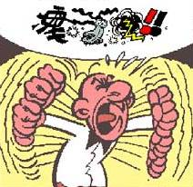

Error de datos: Comprobación de redundancia cíclica
 De: La Frikipedia, la enciclopedia extremadamente seria.
De: La Frikipedia, la enciclopedia extremadamente seria.
 Ejemplo de comprobación de redundancia cíclica
Dícese de la putada que se da única y exclusivamente en CDs y DVDs que contienen datos sumamente importantes.
Causas
Las causas del Error de datos: Comprobación de redundancia cíclica se deben a que el CD, DVD y/o disco de vinilo ha sufrido alguno o todos estos daños:
- La principal: que el dvd/cd sea de marca PRINCO!
- Ser rayado al llevarlo en el bolsillo junto a las llaves, el teléfono movil, la mantequilla, las gafas, más CD's, el equipo A, un molde de Nacho Vidal, etc...
- Ser rayado por amontonar varios CD encima de tu mesa, chiringuito, ataud o cuadra.
- Ser rayado por un ente sobrenatural
- Ser rayado por un ente subnatural
- Ser rayado al insertarlo junto a otro CD en el lector
- Ser rayado por causar problemas a un restaurante chino, con la consecuencia de que el dueño contrate al equipo A y vengan para aniquilarlo
- Ser rayado al comer teniyaki encima de dicho CD
- Ser rayado al confundir con posa vasos, galleta, galleta con chocolate
- Ser rayado por un hermano celoso
- Ser rayado por un hermano celoso sin querer
- Ser comprado en el top manta
- Ser grabado por el asistente de Windows
- Ser rayado por esa persona a la que siempre se le caen los CD al suelo
- Ser rayado por intentar limpiarlo con un estropajo
- Ser rayado por Jugar al Fressbee con el CD
- que tu amigo envidioso por tener ese cd lo tira y hace como que lo ha echo sin kerer
- que se te caiga cuando vas por la calle en una mierda de chucho
Consecuencias
Como todos sabemos, las consecuencias de un destrozo de tal magnitud solo se pueden comparar con el desastre del calentamiento global. Algunas pueden ser estas:
- Que tengas que presentar un trabajo en tu instituto, no funcione y te castiguen a ser colgado de la cruz y a 100 golpes en las articulaciones.
- Que vayas a practicar tu sesión diaria de onanismo, no funcione y a consecuencia te pegues tu los golpes en las articulaciones
- Que vayas a jugar al freesbee con él y tu amigo te diga "Error: Imposible jugar con /dev/cdrom0: Comprobación de redundancia cíclica".
- Que te diga lo anterior tu perro/pez
- Que juegues solo al no tener amigos y aún así una voz en tu conciencia lo diga
- Que después de venderlo en el mercado negro una mafia quiera tus genitales a cambio de las molestias
- Que al tirarlo a la basura vaya al contenedor de basura, después al camión, después al vertedero, después a EEUU, después lo envien con más basura al espacio, después que se convierta en una roca estelar, después que dicha roca caiga en el año 3000 en la tierra, después que en el año 3400 se disuelva la roca, después que el CD navegue a la deriva por el mar y finalmente que un pez quede atrapado en su agujero (pero para ese entonces los peces tendrán unos pequeños brazos desarrollados en años de evolución para salir de esos casos de apuro).
- Que la innombrable te denuncie por modificación de obras de terceros (y si la tiras a la basura y sigue el recorrido del anterior elemento de la lista entonces también te denunciarán por distribución ilícita).
Cómo detectar que el CD/DVD/tostadora está corrupto
Se puede reconocer cuando a alguien le ha ocurrido esto cuando:
- Ves a alguien delante de un ordenador bajando a todos los santos del cielo.(los menos elocuentes solo emitirán un "AAAAAAAAAAAAAAAARGH!")
- Ves a alguien llendo hacia la tienda de informatica DVD en mano y encabronao (aunque aun puede seguir con los sintomas del punto anterior)
- Viene alguien preguntandote que significa "Comprobación"
- Viene alguien preguntandote que significa "redundancia"
- Viene alguien preguntandote que significa "cíclica"
- Viene alguien preguntandote que significa "perro"
Soluciones
Sí pequeño mortal, existen soluciones:
- Impregnarlo de pasta de dientes o en su defecto plastilina, esparcir bien y volver a introducir en el lector
- Ir en coche hasta un semáforo, hablar con un limpiacristales humano de los semaforos/Vendedor de clinex y hacer que lo limpie con su saliva mágica.
- Rayar aún más, a conciencia. Esto no soluciona nada, pero despeja la ira.
- Insultar al CD
- Insultar al primero que haya al lado
- Tirar el ordenador por la ventana
- Tirarte tú por la ventana
- etc, etc
Autor(es):
- Krusher
- Nexo
- Atomsk
- MURO DE AGUAS (2)
- Frikiman
- Nymphetamine
- Cibercrank
- Dark temptation
- Frikisexigirl!!!
- Feresa
Frikipedia 2005-2016, Licencia
GFDL 1.2 - Extraído por FrikiLeaks